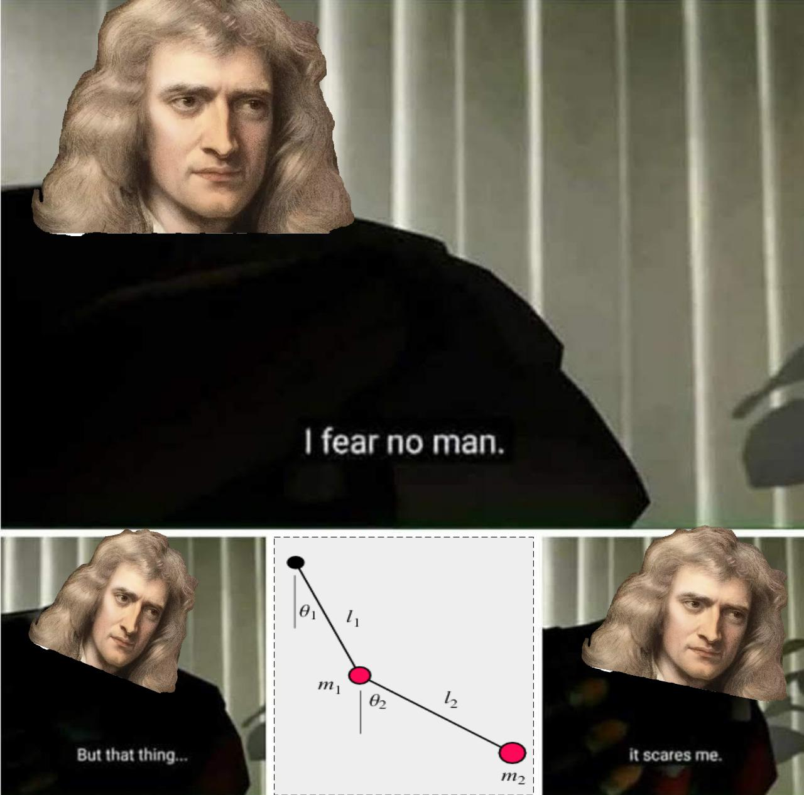
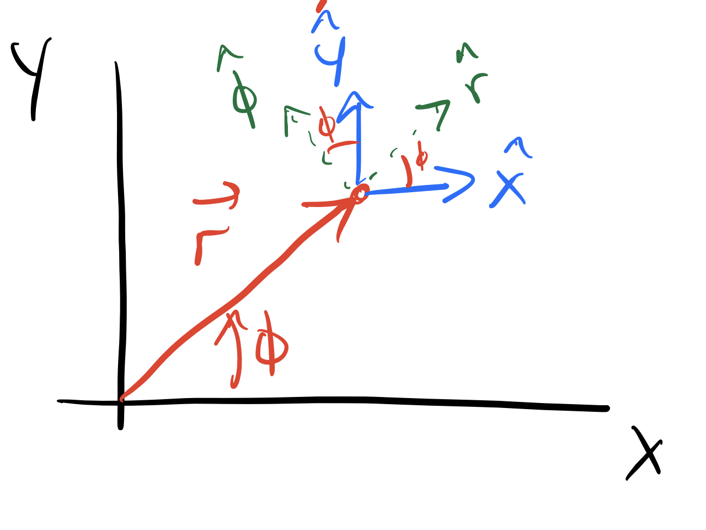

Day 32 - Introduction to Lagrangian Dynamics#

Announcements#
On Monday#
Homework 8 will be posted (Last HW; Due Nov 21)
Rubric for final project posted
Week 12 - Intro to Lagrangian Dynamics
Week 13 - Examples of Lagrangian Dynamics
Week 14 - Project Prep (Thanksgiving week)
Week 15 - Presentations (Last week of class)
Week 16 - Computational Essay Due (Monday of Finals week)
Announcements#
Next Week#
Monday and Wednesday: Introduction to Lagrangian Dynamics
Friday (11/14): DC will be in classroom at 11:30a
Hosting speaker @ 12:30p
Classroom open from 11:30a-12:50p
Second Midterm Help Session
Newton’s Laws#
We use Newton’s laws of motion to describe the dynamics of a system:
First Law: An object at rest remains at rest, and an object in motion continues in motion with the same speed and in the same direction unless acted upon by a net external force.
Second Law: The acceleration of an object is directly proportional to the net force acting on it and inversely proportional to its mass. Mathematically, this is expressed as: $\( \vec{F} = m \vec{a} \)$
Third Law: For every action, there is an equal and opposite reaction. This means that if object A exerts a force on object B, then object B exerts a force of equal magnitude and opposite direction on object A.
Newton’s Laws Expectations#
We can describe every interaction on a body using forces
We can sum up all the forces vectorially in particular coordinate systems (Cartesian, polar, etc.)
We can derive equations of motion for a system by applying Newton’s second law
Sometimes, these expectations can be limiting, especially when dealing with complex systems or when forces are not easily identifiable.
Newton’s Laws in Plane Polar Coordinates#
In plane polar coordinates (\(r,\phi\)), we can express Newton’s second law as follows:
where:
\(\ddot{r}\) is the radial acceleration,
\(\dot{\phi}\) is the angular velocity,
\(\ddot{\phi}\) is the angular acceleration,
\(\hat{r}\) and \(\hat{\phi}\) are the unit vectors in the radial and angular directions, respectively.
How? And what new insights can we gain from this?
Clicker Question 32-1#

The appropriate definition of the \(\hat{r}\) vector using Cartesian coordinates (\(x,y\)) is:
\(\hat{r} = \left( \cos(\phi), \sin(\phi) \right)\)
\(\hat{r} = \left( \sin(\phi), \cos(\phi) \right)\)
\(\hat{r} = \left(-\sin(\phi), \cos(\phi) \right)\)
\(\hat{r} = \left( \cos(\phi), -\sin(\phi) \right)\)
None of the above.
Clicker Question 32-2#
The appropriate definition of the \(\hat{\phi}\) vector using Cartesian coordinates (\(x,y\)) is:
\(\hat{\phi} = \left( \cos(\phi), \sin(\phi) \right)\)
\(\hat{\phi} = \left( \sin(\phi), \cos(\phi) \right)\)
\(\hat{\phi} = \left(-\sin(\phi), \cos(\phi) \right)\)
\(\hat{\phi} = \left( \cos(\phi), -\sin(\phi) \right)\)
None of the above.
Clicker Question 32-3#
We need to take the derivative of \(\hat{r}\) with respect to time. Why should we do this in Cartesian coordinates?
The Cartesian coordinates are easier to work with for derivatives.
The derivative of \(\hat{r}\) in Cartesian coordinates are zero.
The unit vector \(\hat{r}\) is location dependent.
The Cartesian unit vectors do not change with time.
Something else?
Summary of Results#
With \(\vec{r} = r \hat{r}\),
This allows us to express Newton’s second law in polar coordinates as:
Or
Euler-Lagrange Equation#
We found that certain kinds of optimization problems involving functionals could be solved using the Euler-Lagrange equation. This equation provides a powerful method to derive the equations of motion for a system based on an action principle.
The Euler-Lagrange equation is given by:
where \(f(y, y', x)\) is a functional that depends on the dependent variable \(y\), its derivative \(y' = \frac{dy}{dx}\), and the independent variable \(x\).
The Action Integral#
The action integral is central to Lagrangian dynamics. The action \(S\) is defined as the integral of a functional \(L(q,\dot{q},t)\) over time:
where:
\(q\) represents the generalized coordinates of the system,
\(\dot{q}\) represents the generalized velocities (time derivatives of \(q\)),
\(t\) represents time.
Hamilton’s Principle: The path the system takes minimizes (or extremizes) the action \(S\).
The Lagrangian#
The Lagrangian \(\mathcal{L}\) is a function that summarizes the dynamics of the system. It is typically defined as:
where:
\(T\) is the kinetic energy of the system (depends on gen. vel., \(\dot{q}\)),
\(V\) is the potential energy of the system (depends on gen. pos., \(q\)).
The equation of motion is recovered by applying the Euler-Lagrange equation to the Lagrangian (minimizing the action integral).
Clicker Question 32-4#
For a 1D SHO, the kinetic and potential energy are given by:
What are the derivatives of the Lagrangian \(\mathcal{L} = T - V\) with respect to \(x\) and \(\dot{x}\)?
\(\frac{\partial \mathcal{L}}{\partial x} = kx\) and \(\frac{\partial \mathcal{L}}{\partial \dot{x}} = m\dot{x}\)
\(\frac{\partial \mathcal{L}}{\partial x} = -kx\) and \(\frac{\partial \mathcal{L}}{\partial \dot{x}} = m\dot{x}\)
\(\frac{\partial \mathcal{L}}{\partial x} = kx\) and \(\frac{\partial \mathcal{L}}{\partial \dot{x}} = -m\dot{x}\)
\(\frac{\partial \mathcal{L}}{\partial x} = -kx\) and \(\frac{\partial \mathcal{L}}{\partial \dot{x}} = -m\dot{x}\)
None of the above.
Clicker Question 32-5#
For the plane pendulum, with \(\mathcal{L}(x, \dot{x}, y, \dot{y}, t) = \frac{1}{2} m \left( \dot{x}^2 + \dot{y}^2 \right) - mgy\)
We found:
Does that seem right?
Yes, it’s fine.
Maybe, but I’m not sure I can tell you why.
No, I know this is wrong, but I’m not sure why.
No, this is definitely wrong and I can prove it!
Clicker Question 32-6#
For the plane pendulum, we changed the Lagrangian from Cartesian coordinates to plane polar coordinates. In Cartesian, we found the Lagrangian depended on \(y,\dot{x},\dot{y}\). In polar, it only depended on \(\phi\) and \(\dot{\phi}\).
What does that tell you about the dimensions of the system? The system is:
in 3D space, so it’s 3D.
described by two spatial dimensions (\(x,y\)), so it’s 2D.
described by one spatial dimension (\(\phi\)), so it’s 1D.